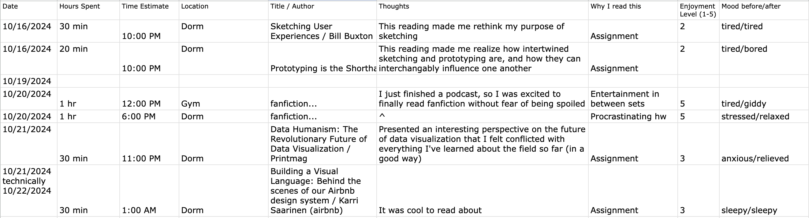
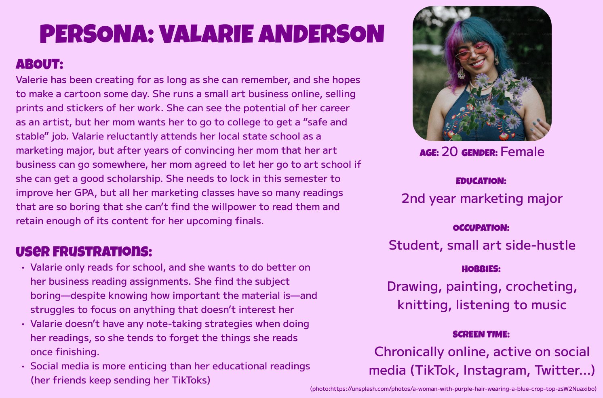
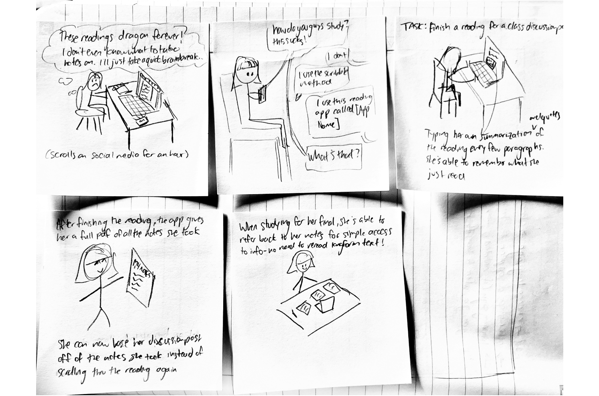
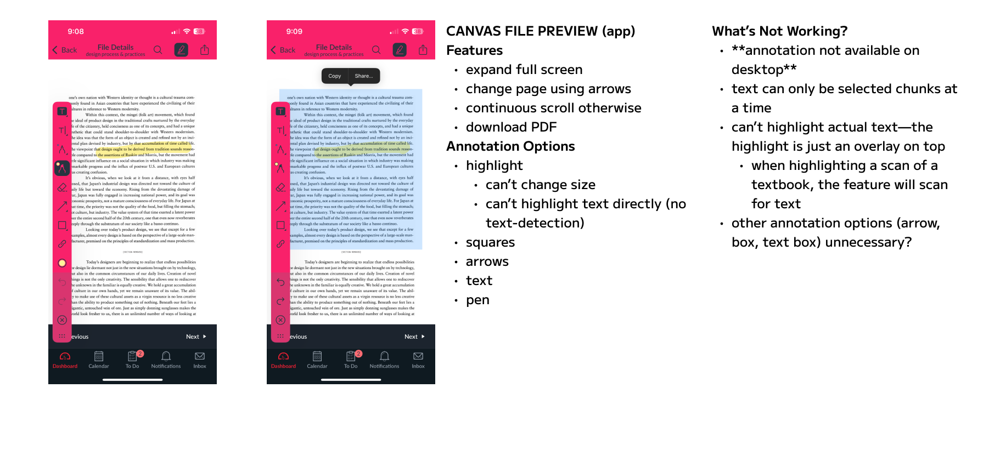
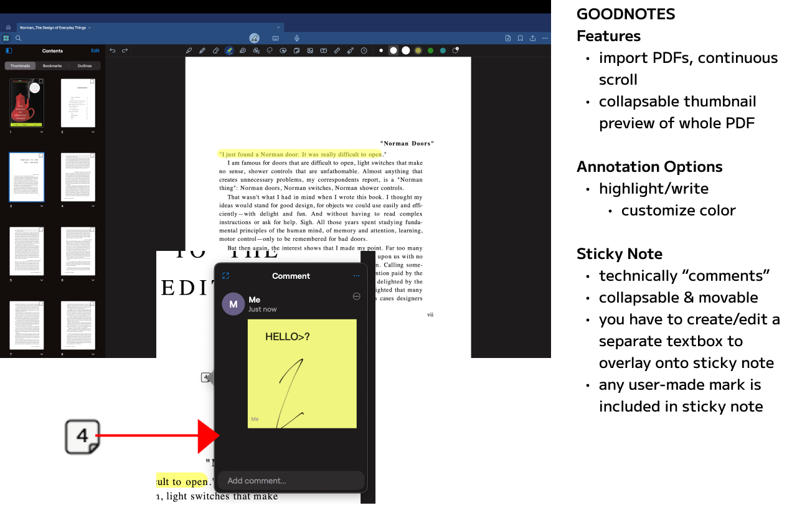
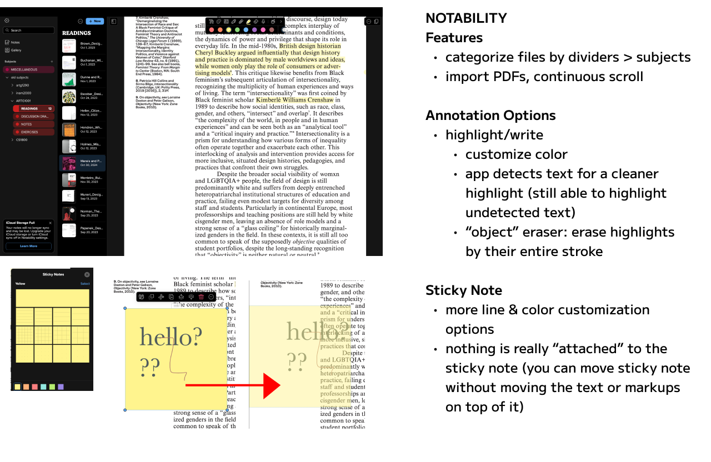
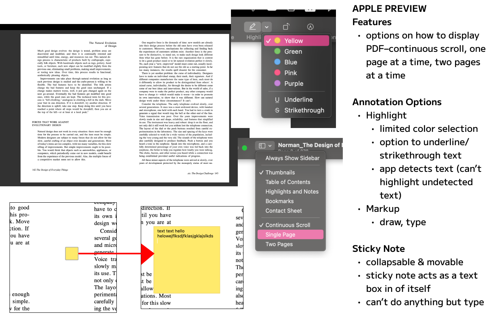
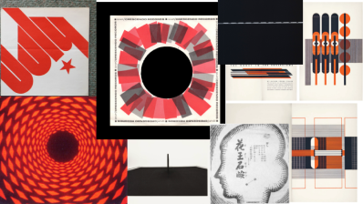

Note Mode: A Canvas Intervention
I was tasked with redesigning the reading experience amongst college students. To tackle such
a broad prompt, I decided to focus on the academic reading experience, particularly for
Canvas, a common platform where students participate in discussion boards based on readings
that their professors post in their class modules. I examined the heuristics and pain points
of Canvas's reading experience and designed a feature to compliment its existing interface.
Research: What is Reading?
User research: Interviews
We first interviewed our peers to investigate people's current reading habits: when they read,
why they read, how they read, and pain points of reading. This allowed us to study the
reading habits of college students to narrow down the problem we want to solve.
Reagan: 2nd year Computer Science & Media Arts major
-
Reads mostly for class (embedded PDFs on Canvas or websites),
but she enjoys physical books for entertainment when she has time
-
"When it's one long [block of text] all at once, it's too much.
There's no motivation because they just drop it all you, and
you don't know where you're going."
-
Pain point of online reading: losing track when scrolling through
a PDF, either while reading or returning to reading
Alizeh: 2nd year Computer Science major
-
Mostly reads romance novels and likes reading because it's relaxing
-
She likes her kindle but didn't like how it doesn't show progress,
prefers a simple user interface, a lot of things on one page can
feel overwhelming, but doesn't like how digital books aren't as
satisfying to read but physical books are too expensive
-
Uses Apple Books more often now. "I like that [Apple Books] has
different light modes and orientations to choose from and that
you can change text size."
-
Pain points: hard to find time to read, not satisfying, no progress bar
Zoe: 2nd year Biochemistry major
-
Reads physical books, digital research/academic papers for school
-
Prefers reading physical books for fun but finds it hard to find
time to read and keep track of books: "I have my books over there
and I haven't touched any of them"
-
In regards to research databases/ academic reading:
finds paywalls and Northeastern authentication annoying,
dislikes digital reading for school (especially at night)
because the brightness keeps her up, she likes using her
iPad because it is easy to highlight/take notes with stylus
-
In regards to pdf reading on ipad she sometimes finds it annoying
to constantly move the page with her finger to stay with the text.
Mason: 3rd year Music Production and Audio Engineering major
-
Read a couple days a week, 45 mins sessions
-
Reads whatever is most available. Prefers physical books.
-
Reads for pleasure and self-improvement.
-
Dislikes when readings take a long time. "If I'm reading and I'm distracted and have to read passages over and over again"
My Reading Log
To gather more data on reading habits, I tracked my reading for a week.

Who, what, why, and how?
Brainstorm: Hunch Sketches

How Might We...?
HMW help students using Canvas retain knowledge and stay focused while reading on across mobile and desktop clients?
Persona: Valarie Anderson

Storyboard

Benchmarking
I analyzed the different annotation features on various desktop note-taking apps and looked at the pain points of Canvas's mobile app annotation feature.




Critique: How can you make it better?
Look & Feel: Mood Board
To explore the tone and feel of Canvas, I created a moodboard based on Canvas's looks and functions.

Type + Color
I also documented their typeface and colors that they used for their website to ensure proper implemention of my features.

Final Digital Prototype
Try it for yourself
here!
Extra Hi-Fis: Phone
I designed a couple screens to envision how the Note Mode feature would be implemented on a mobile app. I kept
the general format consistent, adjusting the sizes of certain components to better fit the smaller screen.